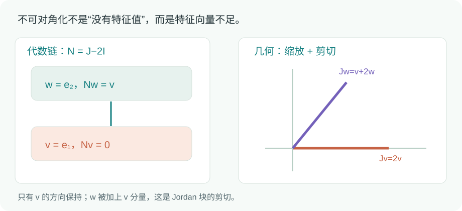

01 / 为什么有两个重根，却只存在一条特征方向？
方阵 J=[[2,1],[0,2]] 的特征多项式是 (λ−2)²，因此特征值 2 有二重代数重数。但是 (J−2I)v=0 的解是 v=(c,0)，所有特征向量共线，无法构成二维基。代数重数不等于几何重数。这正是不能直接对角化的最小反例。

02 / 相似变换保留哪些数学信息？
同一线性算子在不同的基下有不同矩阵表示。取可逆基变换 P，若 B=P⁻¹AP，则 A、B 相似。它们有相同的特征多项式，因此特征值、迹、行列式、秩、代数重数和几何重数都不变。相似性不是逐元素相等，更不是正交性。
若 A 在 n 维空间中拥有 n 个线性无关的特征向量，就可以用这些向量构成 P，使 P⁻¹AP=D 为对角矩阵。若特征空间的维数总和小于 n，再怎么换基也找不到对角表示。
03 / 广义特征向量构成怎样的链？
对某个特征值 λ，令 N=A−λI。长度为 k 的 Jordan 链由 v₁,…,vₖ 组成，满足 Nv₁=0 与 Nvⱼ=vⱼ₋₁（j≥2）。链首是真正的特征向量，后面的向量不要求满足通常的特征方程。本例取 v₁=e₁、v₂=e₂。
在复数域上，任何方阵都相似于由 Jordan 块组成的矩阵。对实矩阵，非实特征值成共轭对，可改在复数域讨论，或使用实 Jordan 形。Jordan 形在理论上能完整展示代数重数、几何重数和幂零链的长度。
| 量 | 定义 | 本例 |
|---|---|---|
| 代数重数 | 特征多项式中根的次数 | 2 |
| 几何重数 | ker(J−2I) 的维数 | 1 |
| 广义特征空间 | ker(J−2I)² | 2 维 |
| 可对角化 | 是否有两个独立特征向量 | 不能 |
04 / 为什么 Jordan 块会出现多项式增长？
对 J=2I+N，由于 N²=0，二项式展开中从 N² 开始的项全部消失。对 k≥1 得到：
比如 J³=[[8,12],[0,8]]。如果把主特征值改成 1，则 (I+N)ᵏ=I+kN；虽然谱半径等于 1，右上元素仍随 k 线性增长。所以谱半径不超过 1 不足以保证所有矩阵幂有界。
05 / 用 Python 检验 Jordan 链与矩阵幂
J=((2,1),(0,2))
N=((0,1),(0,0))
v=(1,0); w=(0,1)
def apply(A,x):
return tuple(sum(A[i][j]*x[j] for j in range(2)) for i in range(2))
assert apply(N,v)==(0,0)
assert apply(N,w)==v
assert apply(J,v)==(2,0)
assert apply(J,w)==(1,2)
assert apply(J,apply(J,apply(J,w)))==(12,8)
print("J^3 w =", (12,8))预期输出：J^3 w = (12, 8)。数值边界：Jordan 块尺寸对微小扰动十分敏感，浮点计算中直接求 Jordan 形通常不稳健。实际求特征值/子空间更倾向于使用 Schur 分解等稳定的数值方法。